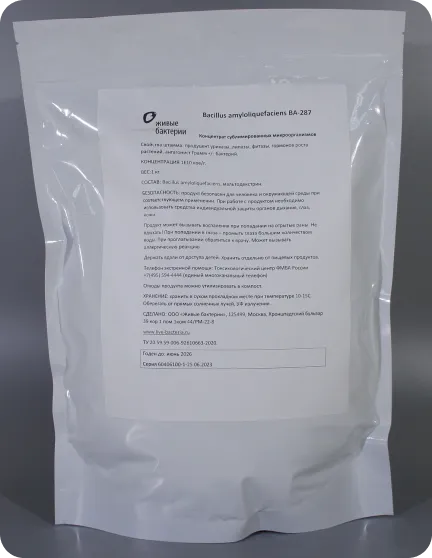

Микробные концентраты от ООО Живые Бактерии

В августе 2023 вышли в продажу микробные концентраты от компании ООО Живые Бактерии.
К продаже доступны:
Bacillus amyloliquefaciens
Bacillus subtilis:
Типовой штамм BS-230
Штамм BS-299 для компостизации
Bacillus mojavensis
Приобрести можно через Яндекс маркет (как физлицам, так и юрлицам), а также напрямую через наш офис.